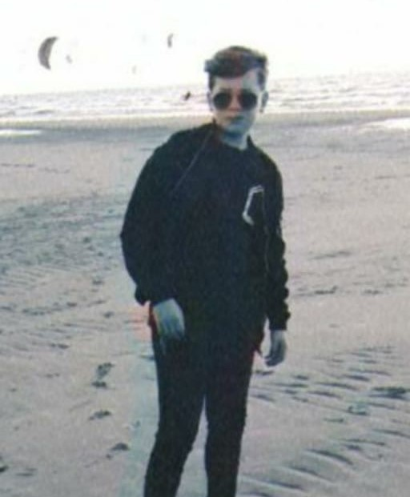
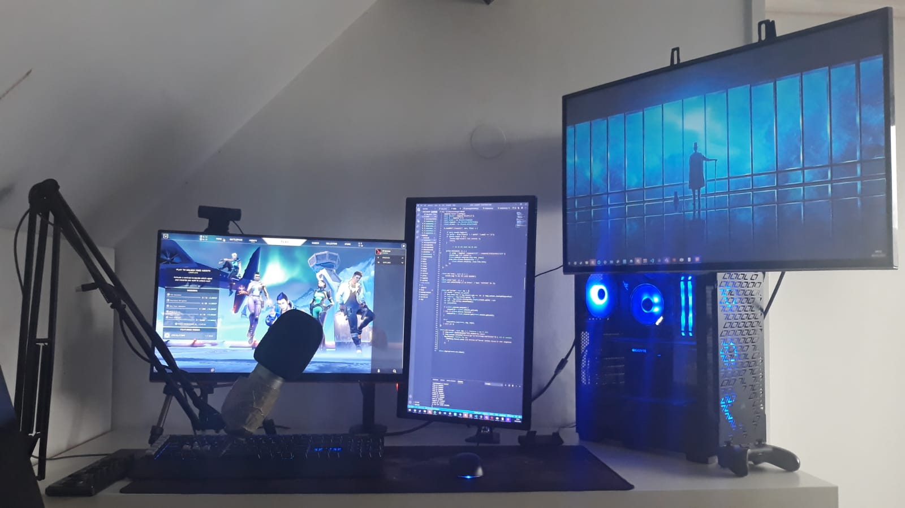

Hallo ik ben Bronco Miete en ik heb de opleiding Software Developer gekozen omdat

programmeren altijd al een hobby van mij is geweest.
En van je hobby je baan maken is iedereen zijn droom.
Daarom wil ik later graag als ICT Software Developer werken. Verder ben ik een persoon van oplossingen en
niet
van de problemen. Als ik een probleem heb probeer ik deze zo goed mogelijk bij te werken.
In mijn vrije tijd zit ik veel achter mijn computer. Meestal ben ik aan het gamen.
Maar ik ben ook een
Developer op een FiveM server van mijn vrienden.
FiveM is eigenlijk GTA V maar dan meer open source.
Dit houd in dat je dingen kan toevoegen en ik doe dit veel in mijn vrije tijd.
De programmeer talen die je
hiervoor nodig hebt zijn LUA, JS en natuurlijk een beetje HTML.
Verder woon ik samen met mijn vader, moeder, broertje en 2 honden.
Ik speel al sinds 2017 spellen op de computer. Ik had
sinds 2018 dezelfde computer tot eind 2020. Dat was de dag
dat hij er mee op hield.
Toen heb ik 2 maanden lang elke dag gewerkt bij de bar en heb ik een nieuwe computer gekocht.
Natuurlijk kon ik hem bij een winkel laten bouwen maar ik houd wel van een uitdaging en ik was benieuwd of
ik het kon, en het is me zeker gelukt!
Ik hoop te leren wat het inhoud om te werken als software developer en mijn kennisgebied te verbreden.
Ook hoop ik op een leuke en goede leeromgeving waar ik mij goed bij voel en goed mijn werk uit kan voeren.
Ik hoop goed samen te kunnen werken met andere leerlingen en duidelijke instructies te krijgen van docenten.
Ook hulp waarbij nodig is.
Ik wil graag na deze opleiding een plekje in een pharmaceutisch bedrijf als software developer.
De reden dat ik bij een pharmaceutisch bedrijf wil werken is omdat ik met mijn kennis graag de wereld wil
verbeteren.
Als ik geen plek vind bij een pharmaceutisch bedrijf wil ik graag voor de overheid werken. Dit omdat de
overheid goed betaald en als je het niet naar de zin hebt bij een afdeling hebben ze nog een ruime keuze aan
andere afdelingen.
| Vak | Cijfer |
|---|---|
| Engels | 8.1 |
| Wiskunde | 8 |
| Scheikunde | 7.9 |
| Nederlands | 7.2 |